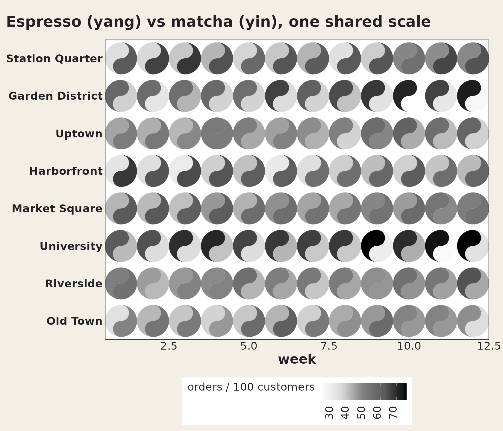
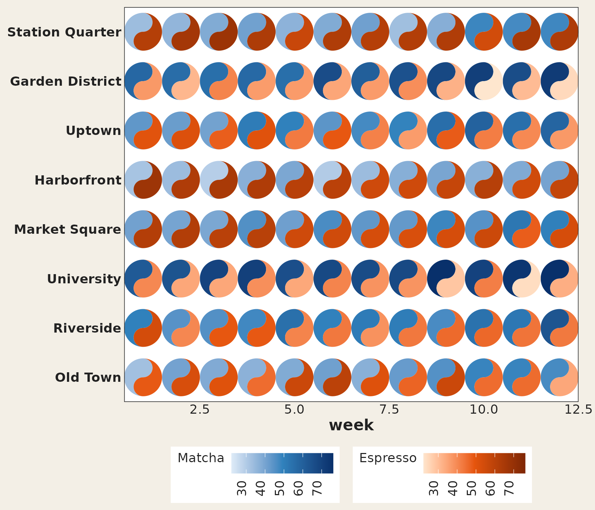
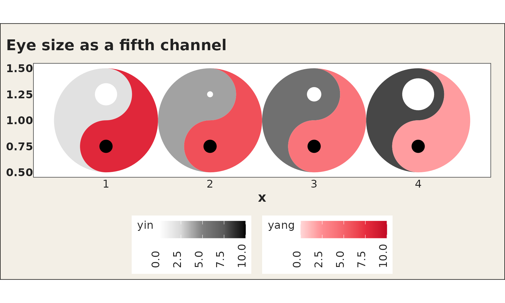
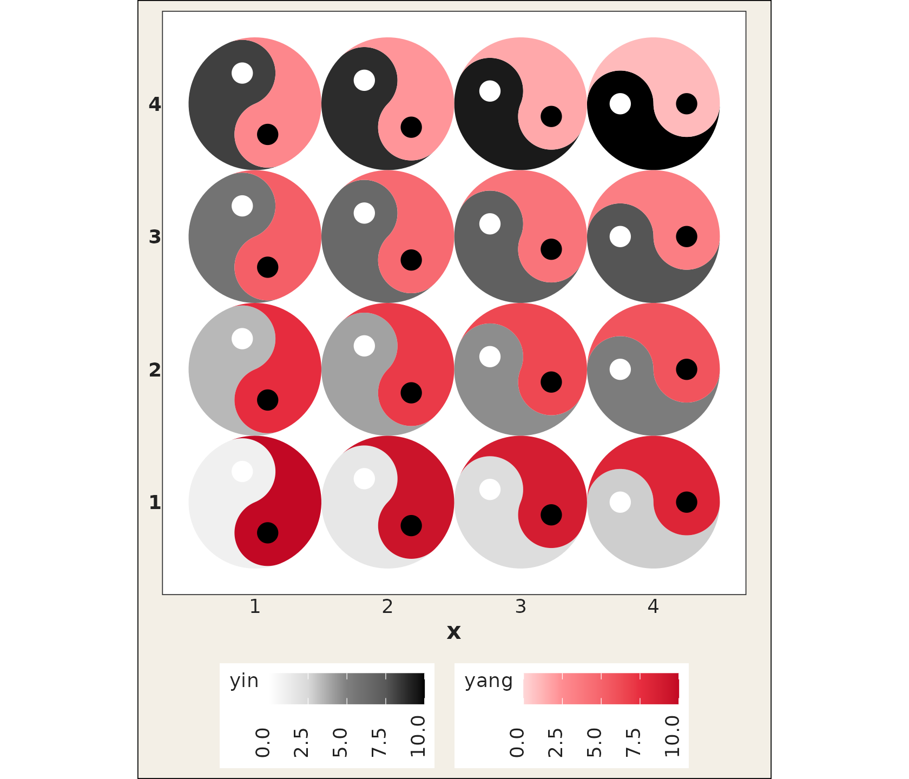
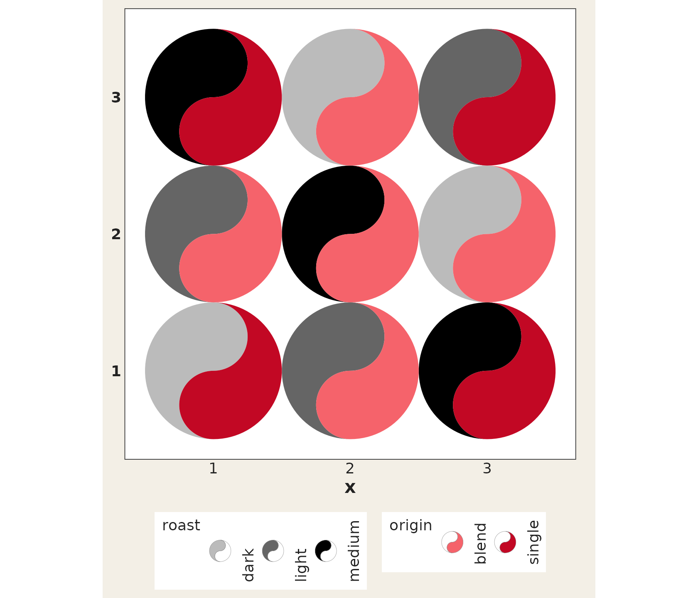
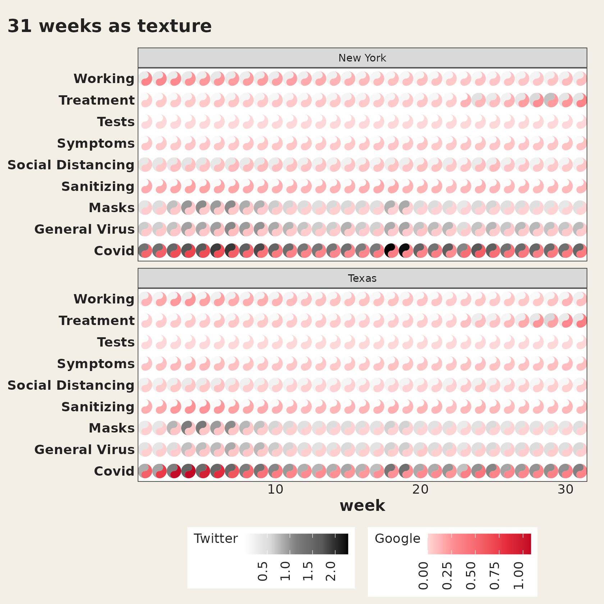
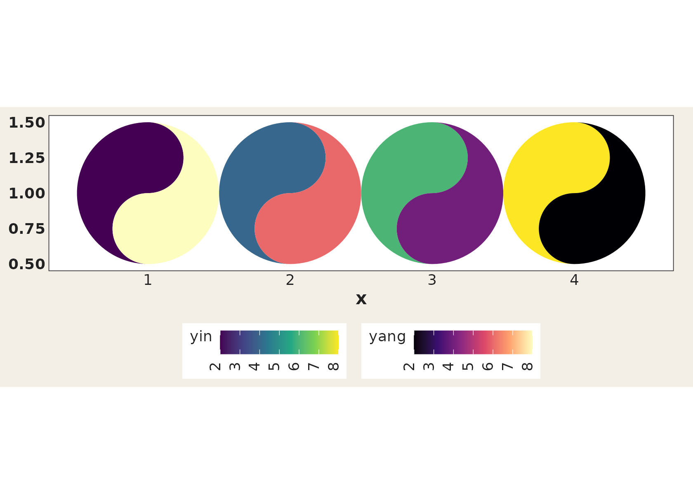

A tour of what geom_taichi() can look like. Every plot
below is a single layer call plus ordinary ggplot2.
One legend, two fish
When the two sources share units, shared_legend = TRUE
paints both fish with one palette on one scale, so the two halves of
every glyph can be read against a single legend. The bundled
cafes_tg data (synthetic espresso vs. matcha orders) is
made for this:
ggplot(cafes_tg, aes(x = week, y = neighbourhood)) +
geom_taichi(yin = matcha, yang = espresso,
shared_legend = TRUE,
yin_name = "orders / 100 customers") +
remove_padding() +
theme_taichi() +
ggtitle("Espresso (yang) vs matcha (yin), one shared scale")
Two palettes, shared limits
Keep each source’s own palette but align the limits, so equal values carry equal ink:
ggplot(cafes_tg, aes(x = week, y = neighbourhood)) +
geom_taichi(yin = matcha, yin_name = "Matcha",
yin_colors = c("#deebf7", "#3182bd", "#08306b"),
yang = espresso, yang_name = "Espresso",
yang_colors = c("#fee6ce", "#e6550d", "#7f2704"),
shared_limits = TRUE) +
remove_padding() +
theme_taichi()
Classic eyes, data-driven eyes
d <- data.frame(x = 1:4, y = 1, yin = c(2, 4, 6, 8), yang = c(8, 6, 4, 2),
pull = c(30, 5, 18, 45))
ggplot(d, aes(x, y)) +
geom_taichi(yin = yin, yang = yang, eyes = TRUE,
yin_eye_size = pull, yang_eye_size = 0.12,
limits = c(0, 10)) +
coord_fixed() +
theme_taichi() +
ggtitle("Eye size as a fifth channel")
A turning grid
Rotation can be pure annotation or a data channel — here each glyph’s angle encodes its column:
grid16 <- expand.grid(x = 1:4, y = 1:4)
grid16$yin <- seq(1, 10, length.out = 16)
grid16$yang <- rev(grid16$yin)
grid16$turn <- grid16$x * 22.5
ggplot(grid16, aes(x, y)) +
geom_taichi(yin = yin, yang = yang, angle = turn, eyes = TRUE,
limits = c(0, 10)) +
coord_fixed() +
theme_taichi()
Categorical fills
d9 <- expand.grid(x = 1:3, y = 1:3)
d9$roast <- factor(c("light", "medium", "dark")[(d9$x + d9$y) %% 3 + 1])
d9$origin <- factor(c("blend", "single")[(d9$x * d9$y) %% 2 + 1])
ggplot(d9, aes(x, y)) +
geom_taichi(yin = roast, yang = origin) +
coord_fixed() +
theme_taichi()
Texture at scale
Dense grids stop being symbols you read one by one and become a texture of two interleaved fields — still useful for spotting bands and regime changes:
ggplot(subset(states_tg, state %in% c("New York", "Texas")),
aes(x = week, y = category)) +
geom_taichi(yin = Twitter, yang = Google) +
facet_wrap(~ state, ncol = 1) +
remove_padding() +
theme_taichi() +
ggtitle("30 weeks as texture")
Bring your own scales
yin_scale / yang_scale accept any fill
scale, and the exported geom_yin_fish() /
geom_yang_fish() let you assemble everything by hand (your
scales, your ggnewscale stacking):
ggplot(d, aes(x, y)) +
geom_taichi(yin = yin, yang = yang,
yin_scale = scale_fill_viridis_c,
yang_scale = scale_fill_viridis_c(name = "yang", option = "magma")) +
coord_fixed() +
theme_taichi()